Overview
The "Game Calendar" is a tool designed for the visualization of a long series of potentially-overlapping time periods, divided into one or more categories, somewhat akin to a more complex Gantt chart. As the name implies, the original purpose of this was for displaying my modding and gaming activities for as long as I have good records, but it can be used with any kind of similarly-structured data, such as the contributions of several people to a communal project. This allows for simple and fast at-a-glance recognition of things like overall time investment, or patterns in timing or coincidence. It also functions as a kind of "scrapbook", allowing you to revisit any time or any specific activity in detail.
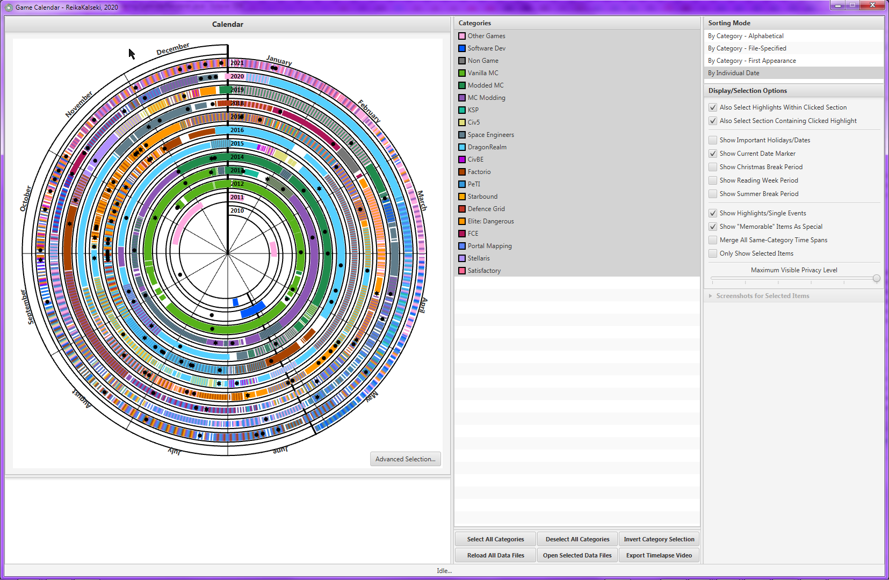 The default display view, with the data as of the time of this writing.
History
This tool is a massively improved, expanded, and (by being programmatic, dynamic) version of some handmade graphics I created over the years to display various activites over their time periods. Usually these were to show my history of activity within a specific domain, most commonly - since it dominates much of my modding history as well as my play time pre 2017 - Minecraft.
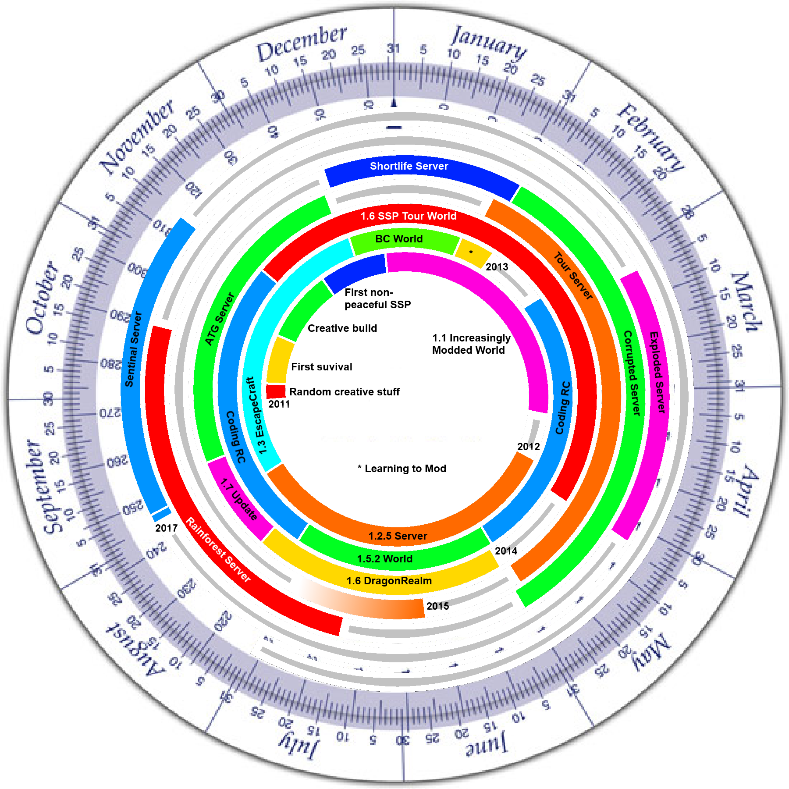 A 2018-era example of exactly this.
In the early summer of 2020, I found myself in an especially nostalgic mood and was thinking back to these handmade graphics, and decided to make a new one, this time with a proper application, with an interactive control system and which can read data files, so as to allow for far more detailed viewing and be simple to keep permanently up to date.
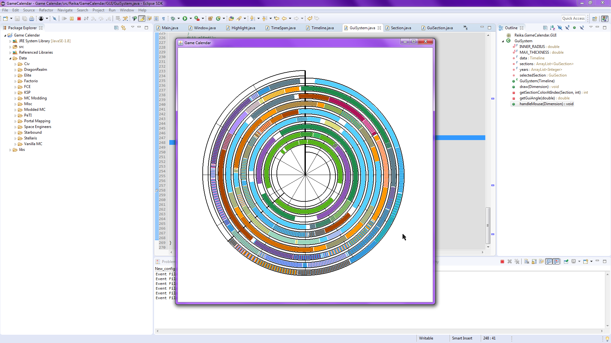 A very early development image.
This kind of display was only possible because I have an extremely aggressive habit of taking screenshots whenever something remotely notable or visually appealing is witnessed, or to record things like "I had this set of items at this time". As a result, I have a very extensive screenshot library, totalling 97.4GB in more than 70000 images in ShareX alone, with another ten or twenty thousand images at least in various game-specific or steam screenshot folders (as I only started using ShareX in May 2015, and not even until as late as the end of 2016 for some games).
Core Concepts
All data loaded into the calendar is defined as either a "period" or an "event"; the only real difference is that the former are spans of time, with a fixed start and end point, while the latter are single-time events. In this use case, that means each period represents a length of time I was playing or modding a specific game, and an event represents some "happening" in the course of this. Both periods and events share most properties. Chief among these is the "category", which is the overall group or family that period/event belongs to. In this case, that is a specific activity type; in the aforementioned communal project example, each category would be a specific contributor. Both periods and events also allow for descriptions, screenshots, and the application of various flags and modifiers (more on that later).
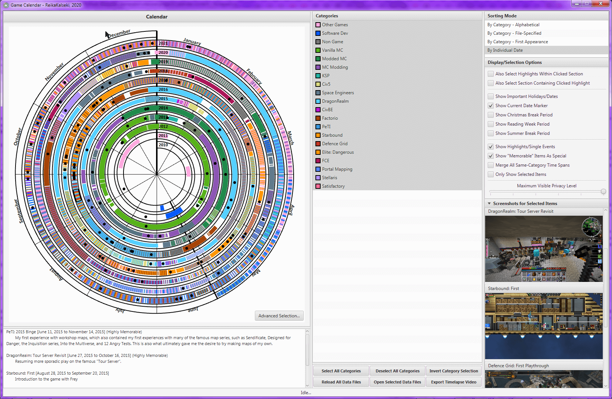 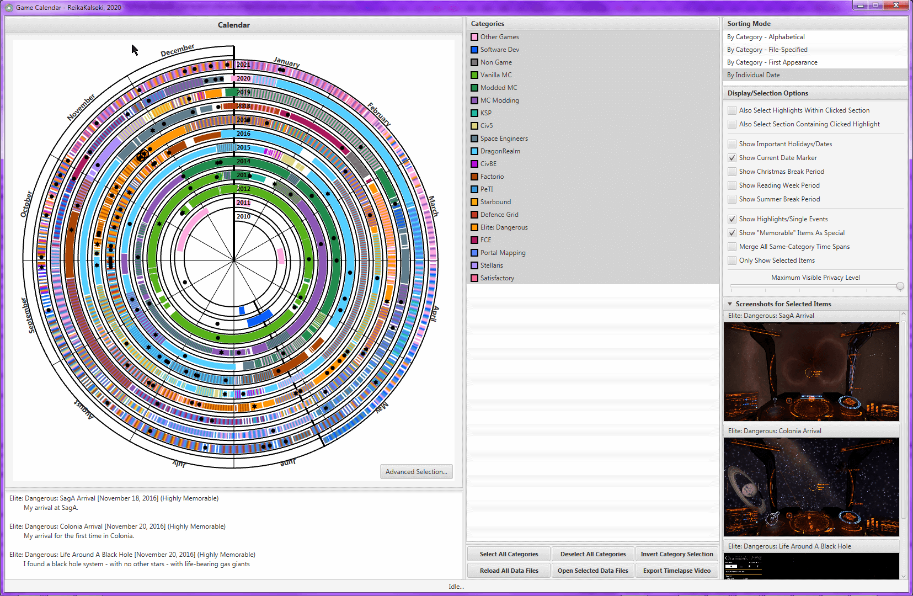 A sample period and some sample events.
The Interface
The primary panel (1) is the calendar graphic itself; this shows the entirety of the time range - expanded to begin and end on a new year - encompassing all loaded periods. The overall layout is spiral, with each successive year encircling the previous one, resulting in a single continuous band for the time span. Each month is allocated 1/12th of the circle - ie 30 degrees - irrespective of its actual length, to ensure that all years remain aligned and to keep the calendar looking balanced.
Each period is rendered as an arc colored after its category; if multiple periods overlap, the arc is split at each change in "layering", with the overlapping regions drawn with a cycle between the applicable colors for the categories in that span of time. So for example, in the above image, the long purple arc occupying the first third of 2013 represents a period of just Minecraft modding, but while that arc would normally extend to mid-June, the existence of a brief "Modded Minecraft" arc spanning late May to early June causes a split on either side, with the middle section alternating between the modding purple and the dark green for modded MC. Where three or more regions overlap, their colors are cycled through in a consistent order.
Highlights are rendered as black points positioned at the radius and angle corresponding to their date of occurrence.
All elements are clickable; doing so will highlight them (and depending on the chosen settings, possibly related elements) and show the applicable category names, identifying name, time spans, descriptions (3), as well as previews of their screenshots if any (8). Clicking "empty" space will unselect all elements. Where multiple periods overlap and they have been split, each segment ("section") is clickable independently. To select multiple elements, standard LCTRL clicking is used (and there is no requirement that the selections be contiguous). Screenshot previews can be clicked to open the file in the native OS image previewer.
Embedded in the corner of this panel is a button to open the "Advanced Selection" menu (2). See below for more details.
The category list (4) provides both a quick overview of the set of all categories, as well as allowing for any entry to be readily toggled. Disabling a category will hide it from the calendar display (completely removing any arcs consisting solely of that category, and removing its color from any overlapping ones), and while disabled, nothing from it can be selected by clicking. This list's ordering, as well as the resultant ordering in the description and screenshot panels, is dictated by the chosen item in the sorting list (6). All categories can be moused over to show a short description if one has been specified in the data files.
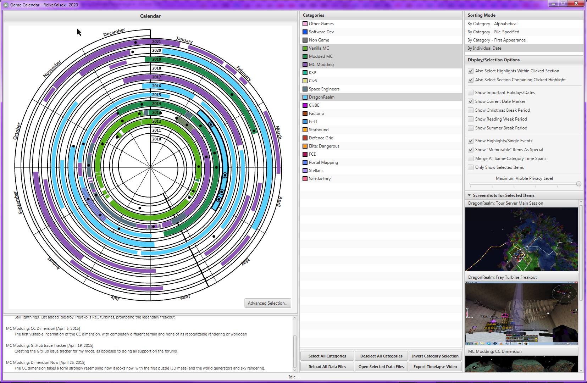 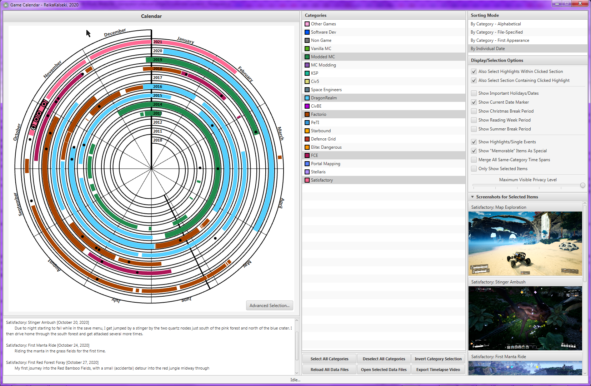 Only selecting MC-related categories and logistics-game-related categories respectively.
The settings in (7) determine how clicking effects a selection, as well as showing or displaying various additional data layers or modulating the display of specific elements (see below).
The collection of buttons in (5) are miscellaneous controls. Most are self-evident, while video exporting will be discussed later.
Finally, the status bar (9) will show application status messages, such as "reloading renderer" or if an error is raised.
Settings
The top two settings control the interaction of events and periods when clicked on. With neither checked, clicking will only ever highlight the element directly interacted with; the two options enable whether to also select the events inside the time span of the clicked period (doing nothing if an event was clicked) and the periods containing the event that has been clicked (doing nothing if a period was clicked).
The next block of settings controls whether to show additional data layers, mostly regarding specific significant dates or ranges thereof. Note that the "break" periods are approximations of what I had during my university studies, so they are not necessarily what you might expect for your own case. The "dual section" nature of the christmas and summer breaks is to indicate the end of classes and the end of the exam period respectively, as only in the latter block was I truly "free".
Finally, there are a series of toggles to modulate the rendering of the calendar items themselves. Fistly, events can be hidden to reduce visual clutter. Next, sections which have been tagged with the "memorable" keyword in the data files - used here to indicate that particular event or period is still well- and fondly-remembered - can be drawn specially. For events, memorability causes them to render as a star instead of a circle, and memorable periods (or rather, sections including some of at least one memorable period) are rendered with full arc thickness compared to the narrower lines of "standard" periods. With this option unselected, all events are circles and all periods full thickness.
The next option converts the rendering from item-specific to category-specific; that is, it will merge a sequence of same-category periods into one continuous region of the category, splitting only on large gaps or where the category set changes.
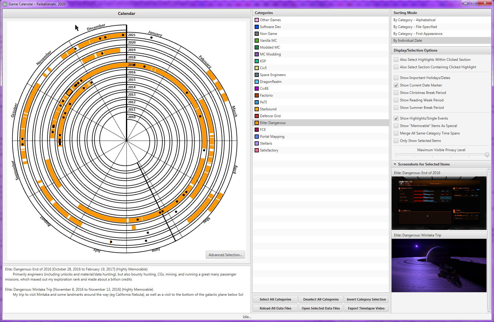 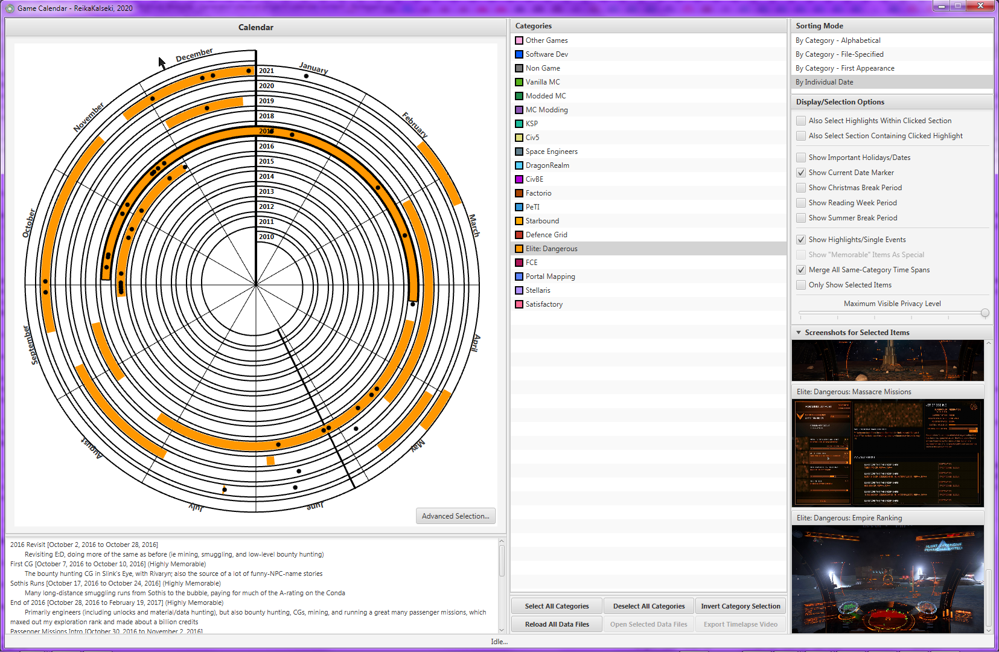 Elite:Dangerous activity between fall 2016 and spring 2017, default and merged mode. Note how the merging combines the entire period.
Next, there is an option to only show selected items. This is generally used alongside the advanced selection system.
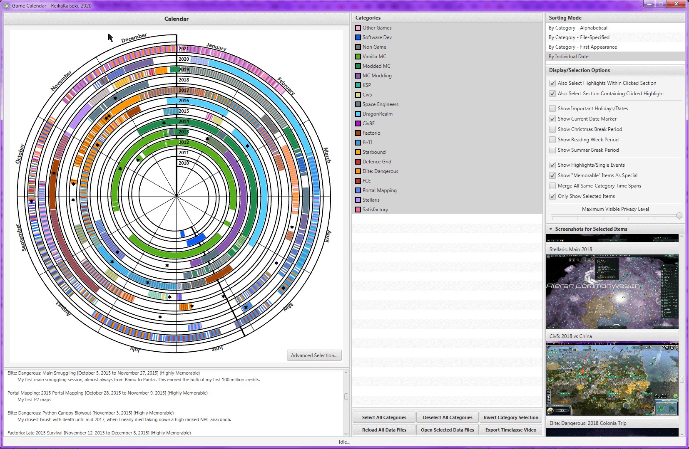 Only showing selected sections, those being all the "memorable" events and periods.
All settings' values are persistent across program loads, assuming the application exits normally.
The final setting is the privacy slider. Every event or period is by default assigned a "privacy level" of zero, but an explicit value (any arbitrary positive integer) can be specified in the source file. This slider is allocated and sized dynamically based on the highest defined privacy level, and every item of a level greater than its current setting is hidden from both display and selection. This is useful if you wish to have entries that are viewable but want hidden from a particular display. For example, one might define several items that contain personally-identifiable information and assign them a high level, so that they can be shown for personal use, but hidden for public renders of the calendar where that slider is set to a lower value.
Advanced Selection
The Advanced Selection system allows for the easy selection of a large number of elements simultaneously based on various criteria. This includes selecting all memorable items, all items that occurred on a specific date, and more. There is also the option to select by arbitrary data properties specified in the files.
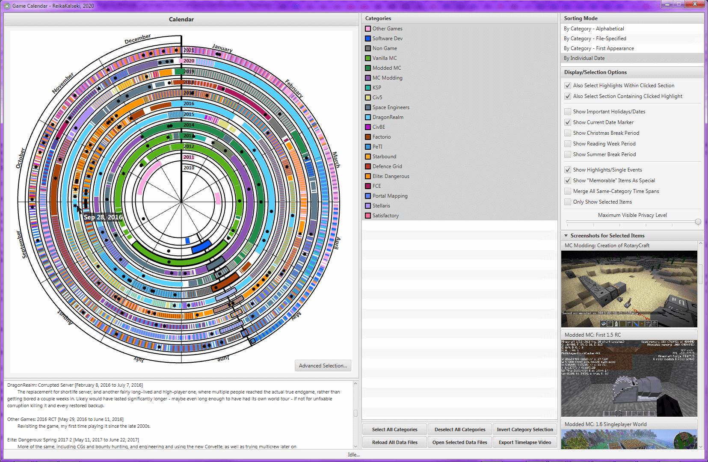 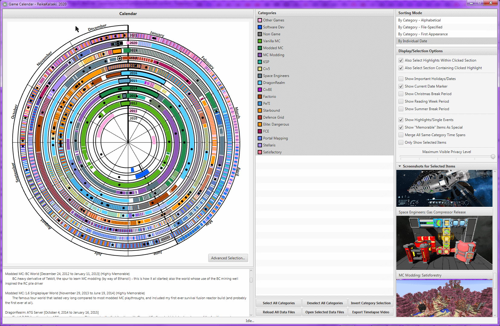 All activities intersecting today and christmas respectively.
Data Input
The program loads its data from a folder (by default a folder called "Data" in the same folder as the jar itself, though this can be changed with a program argument). In that folder, every subfolder will correspond to a category, and contain two of its own subfolders, "Events", and "Periods". Each of these will contain any number of text files (any extension, so long as it is plain text), with each file corresponding to one event or period. The category folders also contain an info.txt file, containing data about the category itself.
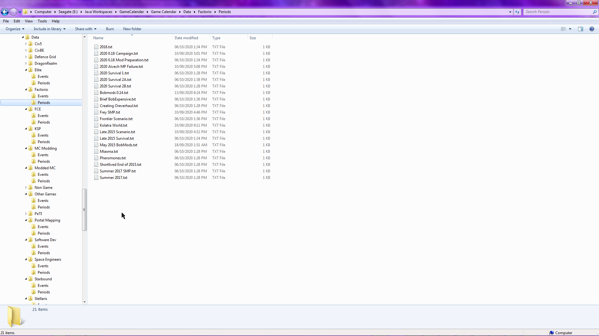 One such example - my Factorio periods as of October 2020.
All the files are structured as a bunch of properties formatted as colon-separated key-value pairs.
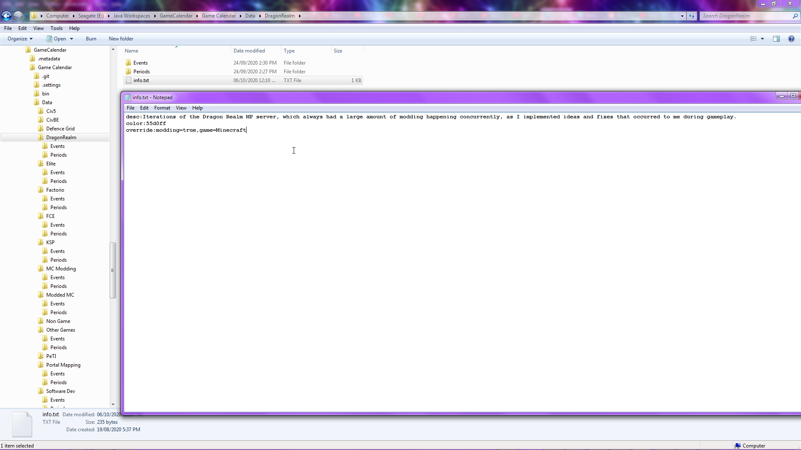 A sample category info.txt. In this case, this sets the description, color, and some override parameters (ie properties imposed on all child events and periods). The display name of the category is by default the folder name, and so there is no explicit "display" property listed here. That would be necessary if you wanted, for example, a category with a '/' in its name, something not permitted in folder names.
Each individual element data file is formatted similarly to the info text files. In the case of periods, this includes start and end dates (self-explanatory), 'desc' for a description, 'screenshot', pointing to a file on the system of a screenshot from the period (and which was felt to be representative or of a memorable moment), 'memorable' applies the memorability flag discussed above. Additionally, other data values can be specified (for example you could add a 'main' key for items that represent "this is what I was spending most of my time doing in this period, far more than the other things I was also doing at the time). Only the start and end dates are mandatory keys. Events use a single "date" property instead of start and end, but are otherwise structured identically.
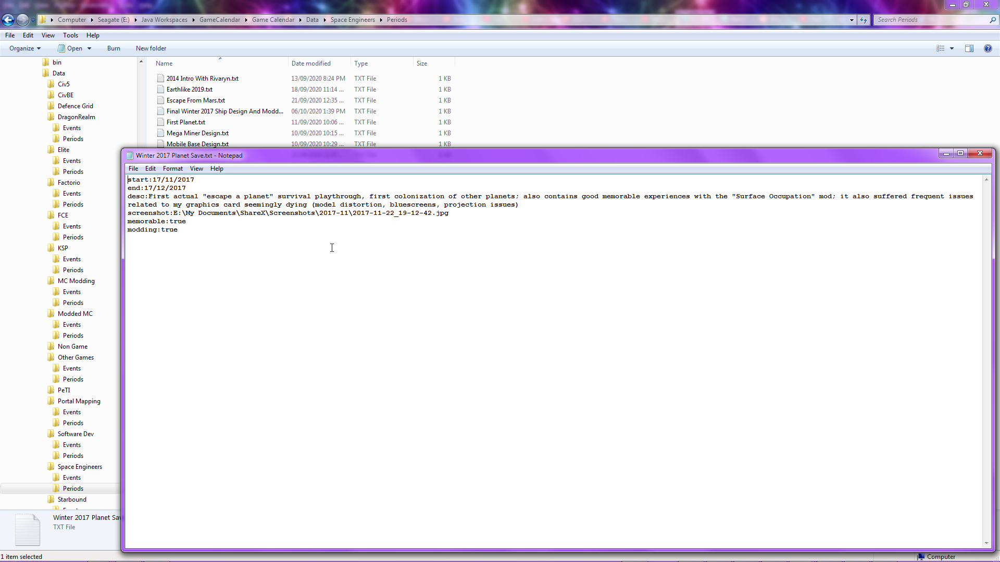 A sample data file for a period, in this case my winter 2017 Space Engineers planet-based survival world. An additional property 'modding' marks it as involving some amount of modding (in this case of SE, obviously).
Source Code
The source code for Game Calendar can be found here:
GitHub
License
Game Calendar is released under a personal-use visible-source license. It may be used for the intended or similar purposes, for personal use (including creation/maintenance of your own projects). It may not be used for commercial purposes or paid software. Unless given explicit written permission, it cannot be redistributed, nor can it be adapted or packaged into a larger product. Derivative works of Game Calendar can be produced, but only for your own personal use; these works or modified versions may never be shared with others.

{kind=link}